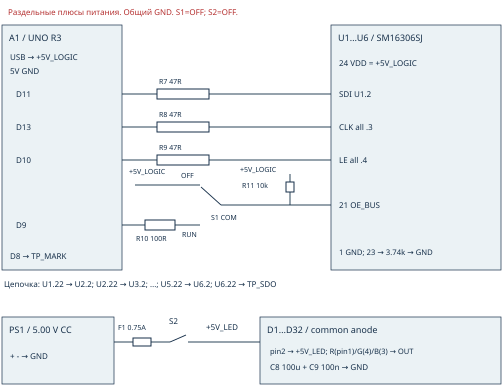

Неподвижный стенд. На железе не проверено. Все узлы одной именованной сети электрически соединены. Номера выводов корпуса, не случайные номера переходника. Не соединять +5V_LOGIC и +5V_LED.
Инструкция PDF · Исходный список сетей

| LED / PIX | Банк | R: pin1 | G: pin4 | B: pin3 |
|---|---|---|---|---|
| D1 / 0 | TOP | U1.5 (CH 0) | U1.6 (CH 1) | U1.7 (CH 2) |
| D2 / 1 | TOP | U1.8 (CH 3) | U1.9 (CH 4) | U1.10 (CH 5) |
| D3 / 2 | TOP | U1.11 (CH 6) | U1.12 (CH 7) | U1.13 (CH 8) |
| D4 / 3 | TOP | U1.14 (CH 9) | U1.15 (CH 10) | U1.16 (CH 11) |
| D5 / 4 | TOP | U1.17 (CH 12) | U1.18 (CH 13) | U1.19 (CH 14) |
| D6 / 5 | TOP | U1.20 (CH 15) | U2.5 (CH 16) | U2.6 (CH 17) |
| D7 / 6 | TOP | U2.7 (CH 18) | U2.8 (CH 19) | U2.9 (CH 20) |
| D8 / 7 | TOP | U2.10 (CH 21) | U2.11 (CH 22) | U2.12 (CH 23) |
| D9 / 8 | TOP | U2.13 (CH 24) | U2.14 (CH 25) | U2.15 (CH 26) |
| D10 / 9 | TOP | U2.16 (CH 27) | U2.17 (CH 28) | U2.18 (CH 29) |
| D11 / 10 | TOP | U2.19 (CH 30) | U2.20 (CH 31) | U3.5 (CH 32) |
| D12 / 11 | TOP | U3.6 (CH 33) | U3.7 (CH 34) | U3.8 (CH 35) |
| D13 / 12 | TOP | U3.9 (CH 36) | U3.10 (CH 37) | U3.11 (CH 38) |
| D14 / 13 | TOP | U3.12 (CH 39) | U3.13 (CH 40) | U3.14 (CH 41) |
| D15 / 14 | TOP | U3.15 (CH 42) | U3.16 (CH 43) | U3.17 (CH 44) |
| D16 / 15 | TOP | U3.18 (CH 45) | U3.19 (CH 46) | U3.20 (CH 47) |
| D17 / 16 | TOP | U4.5 (CH 48) | U4.6 (CH 49) | U4.7 (CH 50) |
| D18 / 17 | TOP | U4.8 (CH 51) | U4.9 (CH 52) | U4.10 (CH 53) |
| D19 / 18 | TOP | U4.11 (CH 54) | U4.12 (CH 55) | U4.13 (CH 56) |
| D20 / 19 | TOP | U4.14 (CH 57) | U4.15 (CH 58) | U4.16 (CH 59) |
| D21 / 20 | TIP | U4.17 (CH 60) | U4.18 (CH 61) | U4.19 (CH 62) |
| D22 / 21 | TIP | U4.20 (CH 63) | U5.5 (CH 64) | U5.6 (CH 65) |
| D23 / 22 | TIP | U5.7 (CH 66) | U5.8 (CH 67) | U5.9 (CH 68) |
| D24 / 23 | TIP | U5.10 (CH 69) | U5.11 (CH 70) | U5.12 (CH 71) |
| D25 / 24 | TIP | U5.13 (CH 72) | U5.14 (CH 73) | U5.15 (CH 74) |
| D26 / 25 | TIP | U5.16 (CH 75) | U5.17 (CH 76) | U5.18 (CH 77) |
| D27 / 26 | TIP | U5.19 (CH 78) | U5.20 (CH 79) | U6.5 (CH 80) |
| D28 / 27 | TIP | U6.6 (CH 81) | U6.7 (CH 82) | U6.8 (CH 83) |
| D29 / 28 | TIP | U6.9 (CH 84) | U6.10 (CH 85) | U6.11 (CH 86) |
| D30 / 29 | TIP | U6.12 (CH 87) | U6.13 (CH 88) | U6.14 (CH 89) |
| D31 / 30 | TIP | U6.15 (CH 90) | U6.16 (CH 91) | U6.17 (CH 92) |
| D32 / 31 | TIP | U6.18 (CH 93) | U6.19 (CH 94) | U6.20 (CH 95) |
| Сеть | Соединённые контакты |
|---|---|
| GND | U1.1, R1.2, C1.2, U2.1, R2.2, C2.2, U3.1, R3.2, C3.2, U4.1, R4.2, C4.2, U5.1, R5.2, C5.2, U6.1, R6.2, C6.2, A1.GND, PS1.-, C7.-, C8.-, C9.2, R12.2, TP_GND.1 |
| +5V_LOGIC | U1.24, C1.1, U2.24, C2.1, U3.24, C3.1, U4.24, C4.1, U5.24, C5.1, U6.24, C6.1, A1.5V, S1.OFF, R11.1, C7.+, PD1.K, TP_LOGIC.1 |
| REXT_1 | U1.23, R1.1 |
| CLK_BUS | U1.3, U2.3, U3.3, U4.3, U5.3, U6.3, R8.2, TP_CLK.1 |
| LE_BUS | U1.4, U2.4, U3.4, U4.4, U5.4, U6.4, R9.2, TP_LE.1 |
| OE_BUS | U1.21, U2.21, U3.21, U4.21, U5.21, U6.21, S1.COM, R11.2, TP_OE.1 |
| DATA_0 | U1.2, R7.2 |
| REXT_2 | U2.23, R2.1 |
| DATA_1 | U1.22, U2.2 |
| REXT_3 | U3.23, R3.1 |
| DATA_2 | U2.22, U3.2 |
| REXT_4 | U4.23, R4.1 |
| DATA_3 | U3.22, U4.2 |
| REXT_5 | U5.23, R5.1 |
| DATA_4 | U4.22, U5.2 |
| REXT_6 | U6.23, R6.1 |
| DATA_5 | U5.22, U6.2 |
| DATA_6 | U6.22, TP_SDO.1 |
| MOSI_RAW | A1.D11, R7.1 |
| CLK_RAW | A1.D13, R8.1 |
| LE_RAW | A1.D10, R9.1 |
| OE_RAW | A1.D9, R10.1 |
| OE_RUN | R10.2, S1.RUN |
| PSU_PLUS | PS1.+, F1.1 |
| FUSED_PLUS | F1.2, S2.1 |
| +5V_LED | S2.2, C8.+, C9.1, TP_LED.1, D1.2, D2.2, D3.2, D4.2, D5.2, D6.2, D7.2, D8.2, D9.2, D10.2, D11.2, D12.2, D13.2, D14.2, D15.2, D16.2, D17.2, D18.2, D19.2, D20.2, D21.2, D22.2, D23.2, D24.2, D25.2, D26.2, D27.2, D28.2, D29.2, D30.2, D31.2, D32.2 |
| MARK | A1.D8, TP_MARK.1 |
| LIGHT | PD1.A, R12.1, TP_LIGHT.1 |
| CH_00_R | U1.5, D1.1 |
| CH_01_G | U1.6, D1.4 |
| CH_02_B | U1.7, D1.3 |
| CH_03_R | U1.8, D2.1 |
| CH_04_G | U1.9, D2.4 |
| CH_05_B | U1.10, D2.3 |
| CH_06_R | U1.11, D3.1 |
| CH_07_G | U1.12, D3.4 |
| CH_08_B | U1.13, D3.3 |
| CH_09_R | U1.14, D4.1 |
| CH_10_G | U1.15, D4.4 |
| CH_11_B | U1.16, D4.3 |
| CH_12_R | U1.17, D5.1 |
| CH_13_G | U1.18, D5.4 |
| CH_14_B | U1.19, D5.3 |
| CH_15_R | U1.20, D6.1 |
| CH_16_G | U2.5, D6.4 |
| CH_17_B | U2.6, D6.3 |
| CH_18_R | U2.7, D7.1 |
| CH_19_G | U2.8, D7.4 |
| CH_20_B | U2.9, D7.3 |
| CH_21_R | U2.10, D8.1 |
| CH_22_G | U2.11, D8.4 |
| CH_23_B | U2.12, D8.3 |
| CH_24_R | U2.13, D9.1 |
| CH_25_G | U2.14, D9.4 |
| CH_26_B | U2.15, D9.3 |
| CH_27_R | U2.16, D10.1 |
| CH_28_G | U2.17, D10.4 |
| CH_29_B | U2.18, D10.3 |
| CH_30_R | U2.19, D11.1 |
| CH_31_G | U2.20, D11.4 |
| CH_32_B | U3.5, D11.3 |
| CH_33_R | U3.6, D12.1 |
| CH_34_G | U3.7, D12.4 |
| CH_35_B | U3.8, D12.3 |
| CH_36_R | U3.9, D13.1 |
| CH_37_G | U3.10, D13.4 |
| CH_38_B | U3.11, D13.3 |
| CH_39_R | U3.12, D14.1 |
| CH_40_G | U3.13, D14.4 |
| CH_41_B | U3.14, D14.3 |
| CH_42_R | U3.15, D15.1 |
| CH_43_G | U3.16, D15.4 |
| CH_44_B | U3.17, D15.3 |
| CH_45_R | U3.18, D16.1 |
| CH_46_G | U3.19, D16.4 |
| CH_47_B | U3.20, D16.3 |
| CH_48_R | U4.5, D17.1 |
| CH_49_G | U4.6, D17.4 |
| CH_50_B | U4.7, D17.3 |
| CH_51_R | U4.8, D18.1 |
| CH_52_G | U4.9, D18.4 |
| CH_53_B | U4.10, D18.3 |
| CH_54_R | U4.11, D19.1 |
| CH_55_G | U4.12, D19.4 |
| CH_56_B | U4.13, D19.3 |
| CH_57_R | U4.14, D20.1 |
| CH_58_G | U4.15, D20.4 |
| CH_59_B | U4.16, D20.3 |
| CH_60_R | U4.17, D21.1 |
| CH_61_G | U4.18, D21.4 |
| CH_62_B | U4.19, D21.3 |
| CH_63_R | U4.20, D22.1 |
| CH_64_G | U5.5, D22.4 |
| CH_65_B | U5.6, D22.3 |
| CH_66_R | U5.7, D23.1 |
| CH_67_G | U5.8, D23.4 |
| CH_68_B | U5.9, D23.3 |
| CH_69_R | U5.10, D24.1 |
| CH_70_G | U5.11, D24.4 |
| CH_71_B | U5.12, D24.3 |
| CH_72_R | U5.13, D25.1 |
| CH_73_G | U5.14, D25.4 |
| CH_74_B | U5.15, D25.3 |
| CH_75_R | U5.16, D26.1 |
| CH_76_G | U5.17, D26.4 |
| CH_77_B | U5.18, D26.3 |
| CH_78_R | U5.19, D27.1 |
| CH_79_G | U5.20, D27.4 |
| CH_80_B | U6.5, D27.3 |
| CH_81_R | U6.6, D28.1 |
| CH_82_G | U6.7, D28.4 |
| CH_83_B | U6.8, D28.3 |
| CH_84_R | U6.9, D29.1 |
| CH_85_G | U6.10, D29.4 |
| CH_86_B | U6.11, D29.3 |
| CH_87_R | U6.12, D30.1 |
| CH_88_G | U6.13, D30.4 |
| CH_89_B | U6.14, D30.3 |
| CH_90_R | U6.15, D31.1 |
| CH_91_G | U6.16, D31.4 |
| CH_92_B | U6.17, D31.3 |
| CH_93_R | U6.18, D32.1 |
| CH_94_G | U6.19, D32.4 |
| CH_95_B | U6.20, D32.3 |
| Ref | Компонент |
|---|---|
| A1 | Arduino UNO R3 5V 16MHz ATmega328P |
| PS1 | Isolated bench PSU 5.00V, current limit up to 0.60A |
| U1 | SM16306SJ QSOP24 |
| R1 | 3.74k 1% 0.25W |
| C1 | 100nF X7R 16V |
| U2 | SM16306SJ QSOP24 |
| R2 | 3.74k 1% 0.25W |
| C2 | 100nF X7R 16V |
| U3 | SM16306SJ QSOP24 |
| R3 | 3.74k 1% 0.25W |
| C3 | 100nF X7R 16V |
| U4 | SM16306SJ QSOP24 |
| R4 | 3.74k 1% 0.25W |
| C4 | 100nF X7R 16V |
| U5 | SM16306SJ QSOP24 |
| R5 | 3.74k 1% 0.25W |
| C5 | 100nF X7R 16V |
| U6 | SM16306SJ QSOP24 |
| R6 | 3.74k 1% 0.25W |
| C6 | 100nF X7R 16V |
| R7 | 47R |
| R8 | 47R |
| R9 | 47R |
| R10 | 100R |
| R11 | 10k |
| R12 | 10k |
| C7 | 10uF >=10V polarized |
| C8 | 100uF >=10V polarized |
| C9 | 100nF X7R 16V |
| S1 | SPDT BBM OFF/RUN |
| S2 | SPST power |
| F1 | 0.75A DC-rated fuse |
| PD1 | Vishay BPW34 optional |
| D1 | Kingbright WP154A4SEJ3VBDZGW/CA |
| D2 | Kingbright WP154A4SEJ3VBDZGW/CA |
| D3 | Kingbright WP154A4SEJ3VBDZGW/CA |
| D4 | Kingbright WP154A4SEJ3VBDZGW/CA |
| D5 | Kingbright WP154A4SEJ3VBDZGW/CA |
| D6 | Kingbright WP154A4SEJ3VBDZGW/CA |
| D7 | Kingbright WP154A4SEJ3VBDZGW/CA |
| D8 | Kingbright WP154A4SEJ3VBDZGW/CA |
| D9 | Kingbright WP154A4SEJ3VBDZGW/CA |
| D10 | Kingbright WP154A4SEJ3VBDZGW/CA |
| D11 | Kingbright WP154A4SEJ3VBDZGW/CA |
| D12 | Kingbright WP154A4SEJ3VBDZGW/CA |
| D13 | Kingbright WP154A4SEJ3VBDZGW/CA |
| D14 | Kingbright WP154A4SEJ3VBDZGW/CA |
| D15 | Kingbright WP154A4SEJ3VBDZGW/CA |
| D16 | Kingbright WP154A4SEJ3VBDZGW/CA |
| D17 | Kingbright WP154A4SEJ3VBDZGW/CA |
| D18 | Kingbright WP154A4SEJ3VBDZGW/CA |
| D19 | Kingbright WP154A4SEJ3VBDZGW/CA |
| D20 | Kingbright WP154A4SEJ3VBDZGW/CA |
| D21 | Kingbright WP154A4SEJ3VBDZGW/CA |
| D22 | Kingbright WP154A4SEJ3VBDZGW/CA |
| D23 | Kingbright WP154A4SEJ3VBDZGW/CA |
| D24 | Kingbright WP154A4SEJ3VBDZGW/CA |
| D25 | Kingbright WP154A4SEJ3VBDZGW/CA |
| D26 | Kingbright WP154A4SEJ3VBDZGW/CA |
| D27 | Kingbright WP154A4SEJ3VBDZGW/CA |
| D28 | Kingbright WP154A4SEJ3VBDZGW/CA |
| D29 | Kingbright WP154A4SEJ3VBDZGW/CA |
| D30 | Kingbright WP154A4SEJ3VBDZGW/CA |
| D31 | Kingbright WP154A4SEJ3VBDZGW/CA |
| D32 | Kingbright WP154A4SEJ3VBDZGW/CA |
R13 1k - возможная замена R12, не дополнительный параллельный резистор. R14 470R - отдельный тест LED до монтажа; в основной сети его нет. PD1/R12 необязательны для статического запуска.